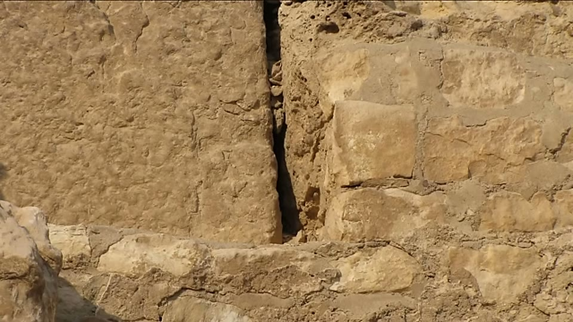

Curious Being
Great Pyramids' Radiocarbon Dating: An Inconvenient Truth
Tina · 21 min · watch on YouTube · summarised 2026-08-23
The pyramids are stone, and radiocarbon dates only organic material. What was dated at Giza is the gypsum mortar packed into the gaps between core blocks — mortar that, in places, fills gaps a few inches wide, and that has charcoal and reed fragments embedded in it 03:02–03:35. The accepted reading is that Egyptians burned wood to heat gypsum, and fragments of that fuel occasionally set into the mix. Researchers searched the pyramids for charcoal-bearing mortar and sampled it.
She contrasts this with the casing stones, whose seams she describes as too tight for mortar at all 02:48–03:02. The dated material comes from the rougher core, not the precise outer skin — a distinction the rest of her argument turns on.

The distinction the whole argument rests on: the precise outer skin has no mortar in it, so nothing dated in either study came from the finished surface of a pyramid.

What was actually sampled: not stone, but the material packed into the gaps of the rough core.
The two studies
Two programmes 03:54–04:41:
- 1984 — around 70 samples from Old Kingdom pyramids. Results came out on average 374 years older than the reigns of the kings credited with the monuments.
- 1995 — over 300 samples across several monuments, published in 2001. She describes it as the most extensive chronometric study on ancient Egyptian sites, and most rigorous for the 4th Dynasty pyramids.
The median calibrated ages of the Giza pyramids came out 100 to 200 years older than expected 04:52–05:00. Her point about the shape of the problem: the same programme's dates for the earlier 1st Dynasty tombs at North Saqqara and for later Middle Kingdom sites agree fairly well with the historical dates. It is specifically the Old Kingdom pyramids that misbehave.

The dataset as its authors printed it, before any of her processing - and the reason a reader can find it despite the video never naming the paper.
She converted the paper's radiocarbon years into calendar years herself, using an online tool, to compare them against the mainstream pyramid timeline 05:25–05:38.
The paper is never named. Its table is on screen, though, and the table identifies itself: every sample carries a laboratory code — ETH- for most, SMU- for two — and an ARCE field number, alongside the course, the collection site, the material and the individual result. A reader who wants the dataset has the reference numbers even though the video never supplies the citation.
Why 100 years matters

What a hundred-year shift would actually move: the three monuments sit inside the Old Kingdom band with only fifty years of clearance at its start.
A century sounds like a rounding error, and her argument for why it is not runs 05:38–07:54: pushing Khufu, Khafre and the Step Pyramid earlier moves their construction out of the Old Kingdom and into the 2nd Dynasty of the Archaic Period. What she argues about that period, citing the World History Encyclopedia: structures then were largely wood and mud brick with stone used only for stelae, walls and floors; the dynasty was obscure and turbulent, marked by uprisings, with unreliable regnal dates and possibly a divided country. Her inference is that kings occupied with civil war would have directed resources to armies rather than to the largest stone structures in the world — and that in any case nothing else from that period shows the capability.
She names the incentive plainly 07:59–08:18: the accepted timeline, with the first pyramids in the 3rd Dynasty and the best at Giza in the 4th, is convenient because an earlier date fractures the whole sequence.
The 2009 reanalysis
A team reanalysed the 1995 raw data in 2009, excluded 6 Khufu samples and 5 Menkaure samples, and reported that the new calibrations showed much closer agreement with the conventional chronology 08:18–08:53. Her objection is about what was published rather than about the statistics: the report presented compiled data, not the individual results, so the exclusions cannot be inspected. She quotes the proverb about torturing data until it confesses, and adds that she is no expert in carbon dating and does not know whether it applies.
The scatter
The second finding, and the one she spends most of the video on 09:04–10:47. Within a single monument the dates are spread far wider than any construction period:
| monument | spread of dates |
|---|---|
| Khufu | oldest to youngest 1,550 years apart |
| Khafre | over 700 years |
| Menkaure | over 1,000 years |
Against a Great Pyramid said to have been built in 20–30 years. She colour-codes the Khufu chart — blue for dates over 100 years older than 2600 BC, yellow for over 100 years younger — to show that old and young dates are interleaved rather than stratified.

The scatter, and the fact that it is not stratified: old and young results sit beside each other at every height in the pyramid.
Worse for the accepted reading, she highlights samples taken from the same location or the same context. About a third of the 46 Khufu samples fall into that category — same spot, dates hundreds of years apart — and they occur throughout the structure, from the low 2nd course to the 198th course near the top. Her chart writes the gap beside each group: 189, 195, 247, 275, 277 and 705 years between samples from one place.

The part the old-wood explanation has to account for: samples from one place, dated centuries apart, with the gap written beside each group.
Old wood, and young wood
The standard explanation for dates that run old is the old wood problem 11:07–11:57: radiocarbon dates when a tree died, not when the wood was burned, and in a dry climate timber can lie around for centuries before use. Burning a mix of old and new wood in one gypsum batch would produce exactly this kind of spread. She notes that the researchers themselves regard it as unlikely that builders consistently used centuries-old wood as fuel.
Then the observation that is the strongest thing in the video 11:57–12:34. Everyone argues about the charcoal that is too old. There is also charcoal that is too young — dated centuries after the reign of the king in question, in all three Great Pyramids. Her phrasing:
You cannot burn wood that does not exist yet.
Old wood explains dates that run early. It cannot explain dates that run late. And the two occur together, in the same samples 12:34–14:04:
- Khufu, 76th course, three samples from one location — two dated decades after Khufu's death, one 163 years before his reign.
- Khufu, 145th course, same location — one 70 years after his death, one in the 2nd Dynasty.
- Khafre, 6th course, five samples from the same seam, spread over 400 years — two about a century after Khafre's death, one over 200 years before his time.
- Menkaure, 18th course, one seam — three samples 100 to 300-plus years after the king, and one over 200 years before him.
Her reading: the mortar is repair work
Her question follows from the young dates 14:30–14:55. If charcoal centuries too young means later repair, what rules out the older charcoal also coming from repair — earlier repair, on a structure that was already there?
Her argument that the mortar is not original rests on two claims 15:18–17:01:
1. Gypsum mortar is weak. Poor compressive strength and no water resistance compared with cement mortar, unsuitable where structural integrity matters. She argues no competent builder would use it in the core of a project of this scale. 2. The blocks are cast. She refers back to her own earlier videos on casings and core stones as artificial reconstituted limestone. Builders capable of mass-producing that, she argues, would have known how to make a strong mortar and would have known gypsum was not one.
So her proposal 17:01–20:54: dynastic Egyptians arrived at Giza long after the pyramids were built, found them awe-inspiring and probably sacred, and patched the crumbling exposed core with the material they had. Egyptians began using gypsum mortar around 4000 BC. The oldest Khufu result is 3705 BC, from the 198th course near the top; 30 of the 46 Khufu samples — 65% — date older than 2700 BC. Because gypsum patching fails, the same places would need redoing, which is her explanation for repeated dates from one seam. She argues people maintain what they regard as sacred more readily than a long-dead king's tomb.
Her conclusion, stated as belief: the scattered dates record centuries of dynastic Egyptian restoration, not the age of the monuments, and the pyramids were built by an unknown civilisation before dynastic Egypt.
What you can check yourself
- The dataset identifies itself on screen. The table she displays carries ETH and SMU laboratory codes and ARCE field numbers against every sample, with the course and collection point for each. Those are enough to find the publication without her citation.
- The 1995 dataset is published. The individual results, courses, sample contexts and the spread within each monument are in the paper. Every figure she quotes about scatter is recomputable from it.
- The interleaving of old and young dates, and the same-location pairs, can be read straight off the published table rather than taken on her word.
- The young dates are the checkable core. Whether charcoal in Giza mortar dates later than the reign of the king credited with the pyramid is a yes-or-no question against the published data.
- The 2009 reanalysis can be found and its exclusions checked — whether individual results were withheld is a matter of fact about the publication.
- The 374-year average from 1984 is a stated figure in a published programme.
- Gypsum's mechanical properties are ordinary material science, testable in any lab.
- The state of 2nd Dynasty architecture is a matter of the archaeological record; so is the date from which Egyptians used gypsum mortar.
What the video does not settle
- No study is named. Neither the 1984 programme, the 1995 study published in 2001, nor the 2009 reanalysis is identified by author, journal or title anywhere in the video. The lab codes visible in the table are a way in, but they are not a citation, and the 2009 reanalysis leaves no comparable trace on screen.
- The old wood problem is not disposed of, only supplemented. The young dates are a real problem for it, but they are a minority of the results; the majority running old is still compatible with old fuel. The young wood observation shows the standard explanation is incomplete, not that it is wrong.
- The restoration hypothesis is not tested against the mortar itself. If dynastic Egyptians patched a pre-existing structure, the patch should be distinguishable — composition, stratigraphy, whether it overlies weathered surfaces. None of that is examined. The hypothesis is offered as more plausible, not as demonstrated.
- The weak-mortar argument assumes the builders' intent. It reasons from what a sound builder would do, which is inference about people whose identity is the thing in dispute. Gypsum in the core gaps may also simply be non-structural fill, which would not require anyone to have thought it strong.
- The casting claim is load-bearing and is imported. Step 2 of the argument depends entirely on the reconstituted-limestone research, which is referred to as settled in prior videos and is not cited here. No study underlying it is named anywhere in the corpus.
- Nothing accounts for the gap. The proposal has the pyramids built by an earlier civilisation and maintained by Egyptians who found them, but the video does not say how long the structures stood untended, or why the earliest surviving repair happens to fall close to the date Egyptians are known to have started making gypsum mortar.
- The scatter cuts both ways. A dataset spread over 1,550 years within one monument is evidence that something is wrong with the samples, the context or the method. That is not by itself evidence for any particular alternative date.
See also
- Questioning the Luminescence Dating Result of the Giza Pyramid — the same case built from a different dating method, and the same pattern of samples from one structure disagreeing by millennia.
- Could the Giza Pyramids and Sphinx Be Much Older Than Believed? — where the "unknown civilisation" of the last line gets a proposed date.
- Giza's Granite Mystery — the casting argument this entry's second step depends on.
What we have not checked
- No study in this video is named, so none has been located or read. The 1984 programme, the 1995 study published in 2001, and the 2009 reanalysis are all described only by year.
- The figures are as she states them and have not been traced: 374 years average for 1984; around 70 and over 300 samples; 100–200 years median discrepancy; spreads of 1,550, 700 and 1,000 years; 46 Khufu samples, a third from repeated locations, 30 of 46 older than 2700 BC; 3705 BC as the oldest Khufu date; 6 and 5 samples excluded in 2009; courses 2, 18, 76, 145, 198.
- The World History Encyclopedia characterisation of the 2nd Dynasty is quoted from screen and has not been checked against the source.
- The claim that Egyptians began using gypsum mortar around 4000 BC has not been sourced.
- Her calendar-year conversion was done with an unnamed online tool and has not been reproduced.
- Whether the individual results are genuinely absent from the 2009 report, as opposed to published elsewhere, has not been verified.